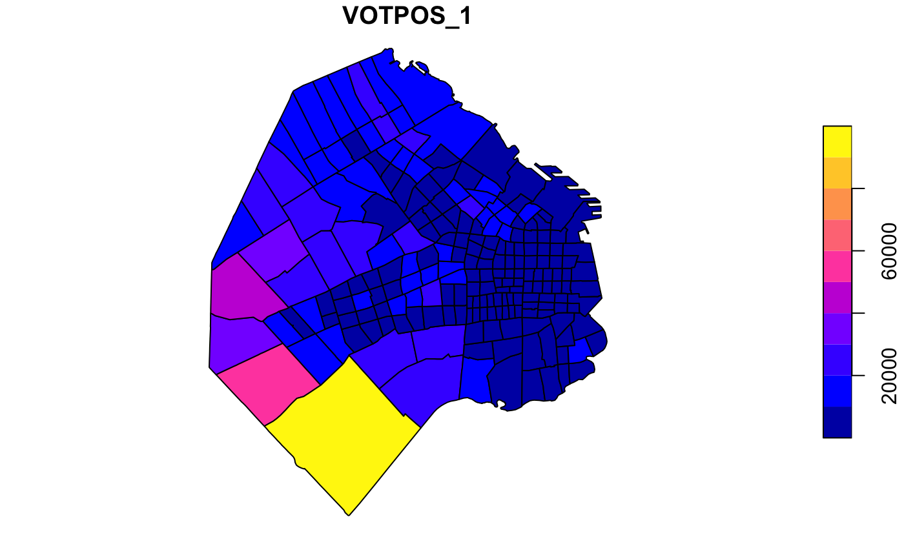

Selected Electoral Data for the 1999 National Elections, Argentine Congress (Lower House).
buenosaires
An sf data frame with 209 rows, 20 variables, and a geometry column:
Indra Code ID
Indec Province Code ID
Municipality ID
Province Name
Municipality Name
Precinct ID
Total Number of Votes for the Center Right APR “Accion por la Republica”
Total Number of Votes for the Centrist “Alianza” (Coalition of UCR and FREPASO)
Total Number of Effective Voters
Total Number of Registered Voters
Total Number of Valid Votes
Percentage of Alianza Votes over Valid Votes
Percentage of APR Votes over Valid Votes
Percentage of Effective Votes over Valid Votes
East Coordinates
North Coordinates
Numeric ID
Percentage of APR Votes over Valid Votes
Percentage of Alianza Votes over Valid Votes
Percentage of Effective Votes over Valid Votes
For further details contact Ernesto Calvo (ecalvo@uh.edu) or Marcelo Escolar (marceloescolar@fibertel.com.ar).
Sf object, undefined Coordinate Reference System.
if (requireNamespace("sf", quietly = TRUE)) { library(sf) data(buenosaires) plot(buenosaires["VOTPOS_1"]) }